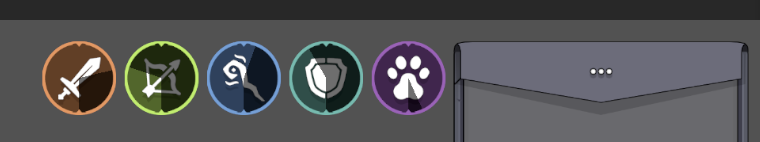

Sistema de Treinamento e Status
O coração de Grind Hero é seu revolucionário sistema de treinamento contínuo. Diferente de outros MMORPGs onde você só progride enquanto joga, em Grind Hero seu personagem continua evoluindo mesmo quando você está offline!
Fluxo de Treinamento (Ilustração Animada Placeholder)
(Aqui entraria uma ilustração animada ou diagrama interativo do sistema de treinamento)
Como Funciona o Treinamento
Seu personagem ganha experiência e aprimora atributos através de ações no jogo e também através do sistema de treino AFK (Ausente do Teclado).
Calculadora Interativa de Progresso (Exemplo)
8 horas(Esta é uma representação conceitual. A lógica real dependerá das fórmulas do jogo.)
Treinamento Ativo vs. AFK
| Modalidade | Vantagens | Detalhes |
|---|---|---|
| Treinamento Ativo (Online) | Ganho de experiência 6x mais rápido, acesso a bônus de treinamento em grupo. | Requer que o jogador esteja online e participando ativamente das atividades. |
| Treinamento AFK (Offline) | Progresso contínuo 24/7, mesmo offline. | Ganho de experiência 6x menor que o online. Limite máximo de 24 horas de treinamento acumulado. Requer Gemas (1 Gema = 1 hora). Personagem fica visível no mundo. |
Atributos Treináveis
Em Grind Hero, os personagens evoluem suas habilidades por meio de prática e experiência. Cada ação realizada pelo jogador contribui para o aprimoramento de um atributo específico.
⚔️ Melee (Corpo a Corpo)Habilidade em combate corpo a corpo. Aumenta o dano com armas de curta distância. Treinado com ataques básicos de classes melee.
Representa a habilidade do personagem em combate corpo a corpo. Treinável apenas por classes melee, quanto maior for seu nível, mais forte será o dano causado com armas de curta distância. O treinamento ocorre ao realizar ataques básicos contra monstros.
🛡️ Shielding (Escudaria)Capacidade de defesa com escudo. Aumenta a eficácia ao bloquear e reduz o dano recebido. Treinado ao bloquear golpes e atacar.
Define a capacidade do personagem de se defender utilizando um escudo. Quanto mais desenvolvido, maior a eficácia ao bloquear golpes. O treinamento ocorre quando o personagem bloqueia dano de um monstro, desde que tenha atacado o monstro recentemente.
🏹 Distance (Distância)Precisão e dano com armas de longo alcance. Influenciado pela distância do alvo (ideal 4-5 unidades, chance máx. 90%). Treinado com ataques básicos de armas de longo alcance.
Influencia a precisão e o dano dos ataques realizados com armas de longo alcance. A mecânica de precisão depende da distância ideal (4-5 unidades), com chance máxima de acerto de 90% (pode aumentar com itens). O treinamento ocorre ao utilizar ataques básicos contra monstros.
🔥 Magic (Magia)Domínio sobre artes arcanas. Magias ignoram defesas convencionais. Treinamento mais lento, ocorre com ataques básicos de armas mágicas e consome mana.
Representa o domínio do personagem sobre as artes arcanas. Magias ignoram defesas convencionais. O treinamento de Magic é mais lento e ocorre ao utilizar ataques básicos contra monstros com armas mágicas, consumindo mana.
🐺 Taming (Adestramento)Desempenho dos pets em combate. Aumenta o dano do pet e eficácia de buffs. Treinado passivamente enquanto o pet ataca.
Está diretamente ligado ao desempenho dos pets em combate. Quanto maior o nível de Taming, maior será o dano causado pelo pet e a eficácia de seus buffs passivos. O treinamento acontece de forma passiva enquanto o jogador está acompanhado de um pet que participa do combate.
Atributos de Evolução Automática
Alguns aspectos do personagem evoluem automaticamente conforme ele sobe de nível:
- Max HP: Quantidade máxima de vida.
- Max MP: Reserva de mana para magias.
- Max SP: Energia/stamina para esquiva.
- Velocidade de Movimento: Rapidez de deslocamento.
Esta página foi útil?